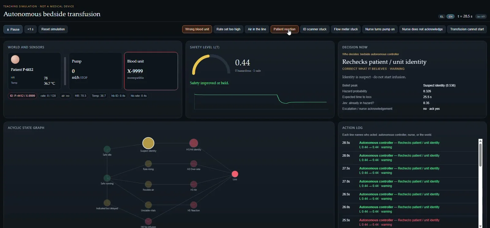
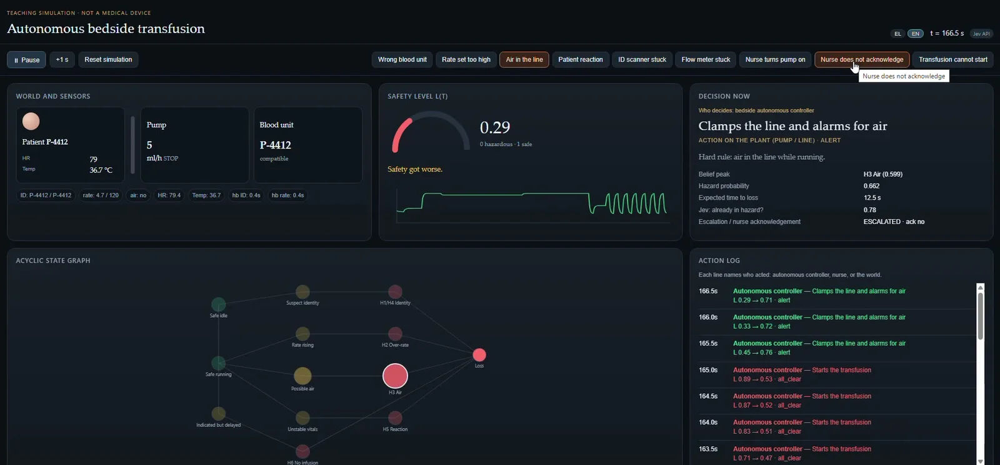

このUIがしていること
判断（Jev）、制御（コード）、上書き（看護師）が別の主体として画面に分かれている。ログの各行に「誰が動いたか」が出るため、看護師が強制的にStartを押した場合も、制御が止めた事実と並んで残る。
- 助言と命令を分けている。低いconfidenceでは最有力の選択肢を実行しない、という設計が作者の説明に明記されている。
- 誤った血液のときは停止して警告、空気混入のときはラインを止めて警報、という異なる対応が、同じ画面枠で切り替わる。
- 上書きを外して適合する血液に戻すと、L が回復して再開できる、と作者は説明している。回復の過程も見せる設計。
- 2枚目のログでは、Startの記録の後にClampと警報の記録へ切り替わる様子が読み取れる。
キャプチャ
{kind=link}

（原寸の画像を開く）{kind=link}

（原寸の画像を開く）見る箇所安全レベル L(t) のゲージと推移、「Decision now」の内訳、状態グラフ、誰が動いたかを示すAction log
入力から画面の変化まで
-
判断への入力
仮想の患者、ポンプ、血液バッグ、センサー値（ID、流量、空気、心拍、体温）。上部のボタンで事象（血液の取り違え、空気混入、看護師が応答しない、など）を起こせる。
-
Jevの判断
作者の説明では、閉じた質問（誤った血液か、稼働中の空気混入か、どちらでもないか）に、校正済みの確率とconfidenceで答える。画面には「Jev: already in hazard?」の値（0.35、0.78）が出る。confidenceが低いとき、最有力の選択肢はコマンドにならない。
-
結果がUIをどう変えるか
安全レベルL(t)のゲージ（0.44、0.29）と推移グラフ、Decision now（「Rechecks patient / unit identity」「Clamps the line and alarms for air」）、Belief peak・Hazard probability・Expected time to loss、STPAの状態グラフ、実行主体と L の変化を並べたAction log。
- 判断型の見立て
- Noul / Choice推定
- 作者は「誤った血液か、稼働中の空気混入か、どれでもないか」という閉じた質問と説明する。画面の「Jev: already in hazard?」の値と合わせ、yes/noと選択の組み合わせと見立てた。質問型の名称は明記されていない。
Jevとの適合
「今のスナップショットが危険かどうか」を閉じた質問で確率化する使い方は、Jevの向く形。一方でこの画面は安全性を保証するものではなく、教材として判断・制御・人間の相互作用を見せることに価値がある。臨床的な妥当性の検証はこの事例の範囲外。
確認範囲と未確認事項
作者の投稿動画から静止画を確認。作者は「教育用のシミュレーションで、実際の病棟でも医療機器でもない」と明記している。Jevはポンプを動かさず、現在のスナップショットに対する「目撃者（witness）」だと説明されている。
- 確認済み動画から得た2枚の静止画に見えるL(t)、Decision now、Action log、状態グラフ、「TEACHING SIMULATION · NOT A MEDICAL DEVICE」の表記、投稿文の説明
- 未検証判断値が制御へどう反映されるかのコード、確率の校正の質、上書き・回復の全経過、医療上の妥当性。作者の説明に沿った動作をこちらでは再現していない
- 推定扱い「Jev: already in hazard?」の質問型と閾値の扱い
- 引用X投稿は2026-09-20（UTC）。動画から必要な範囲の静止画を切り出して引用。権利は作者に帰属する